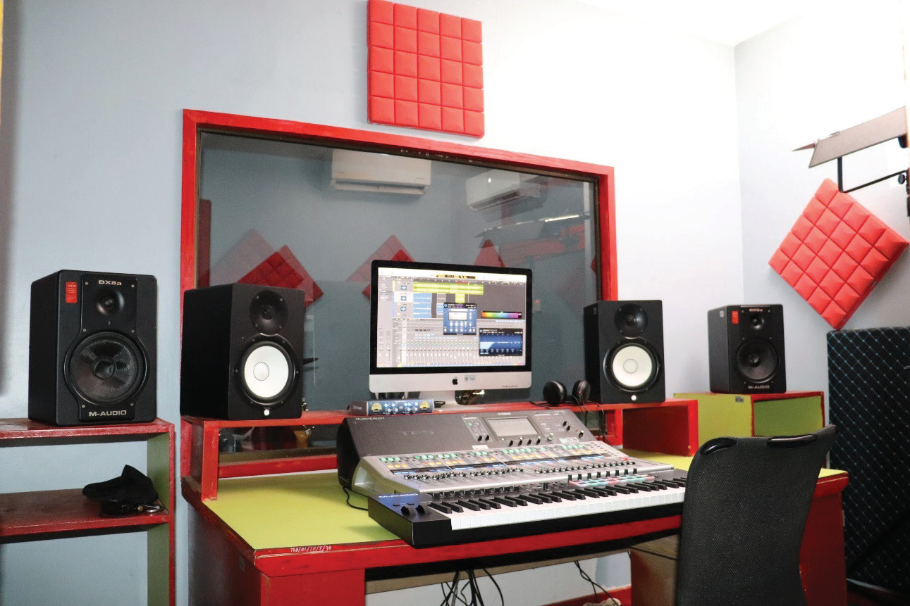

quality. A music studio has special equipment that help to record, mix and improve the sound before it is shared with the audience. People go to a music recording studio to record songs, instrumental music or even spoken words. A music recording studio usually has two main rooms, namely, the control room and the live room.
The control room
This is the room where a music producer works. Music producers guide the process of producing music. They may produce music for singers, rappers or instrumentalists. They may also produce music for movies and design sounds for video games. In the control room, there are recording equipment and tools that the producer uses to record and control the music. In this room, the producer listens carefully to the sound, change things like volume and balance, and make sure everything sounds good. The control room is a quiet space, and it is built in a way that helps the producer hear the sound clearly. Figures 7.1 shows an example of the control room.

The live room
This is where the singers, instrumentalists or speakers perform. They sing, play instruments or talk while the producer records them. The live room is designed